Chapter 4
NC Commands
Mathematica 3.0 has a lovely graphical user interface which uses Palettes. Mathematica Palettes
display the most important commands and prompt the user. We have such a Palette for
NCAlgebra and NCGB which contain most of the commands in this chapter. See the TEAR OFF
Section in the back for a picture of the Mma Palettes for NCAlgebra and NCGB. To pop up this
Palette, open a notebook, load NCAlgebra or NCGB, then open the file NCPalette.nb. If
you are in a directory containing the file NCPalette.nb you can open it directly from a
notebook.
4.1 Manipulating an expression
4.1.1 ExpandNonCommutativeMultiply[expr]
-
- Aliases: NCE,NCExpand
-
- Description:
ExpandNonCommutativeMultiply[expr] expands out NonCommutativeMultiply’s in
expr. It is the noncommutative generalization of the Mma Expand command.
-
- Arguments: expr is an algebraic expression.
-
- Comments / Limitations: None
4.1.2 NCCollect[expr, aListOfVariables]
-
- Aliases: NCC
-
- Description: NCCollect[expr,aListOfV ariables] collects terms of expression expr
according to the elements of aListOfV ariables and attempts to combine them using a
particular list of rules called rulesCollect. NCCollect is weaker than NCStrongCollect
in that first-order and second-order terms are not collected together. NCCollect uses
NCDecompose, and then NCStrongCollect, and then NCCompose.
-
- Arguments: expr is an algebraic expression. aListOfV ariables is a list of variables.
-
- Comments / Limitations: While NCCollect[expr,x] always returns mathematically correct
expressions, it may not collect x from as many terms as it should. If expr has been
expanded in the previous step, the problem does not arise. If not, the pattern match
behind NCCollect may not get entirely inside of every factor where x appears.
4.1.3 NCStrongCollect[expr, aListOfVariables]
-
- Aliases: NCSC
-
- Description: It collects terms of expression expr according to the elements of
aListOfV ariables and attempts to combine them using the particular list of rules
called rulesCollect. In the noncommutative case, the Taylor expansion, and hence the
collect function, is not uniquely specified. This collect function often collects too much
and while mathematically correct is often stronger than you want. For example, x will
factor out of terms where it appears both linearly a quadratically thus mixing orders.
-
- Arguments: expr is an algebraic expression. aListOfV ariables is a list of variables.
-
- Comments / Limitations: Not well documented.
4.1.4 NCCollectSymmetric[expr]
-
- Aliases: NCCSym
-
- Description: None
-
- Arguments: expr is an algebraic expression.
-
- Comments / Limitations: None
4.1.5 NCTermsOfDegree[expr,aListOfVariables,indices]
-
- Aliases: None
-
- Description: NCTermsOfDegree[expr,aListOfV ariables,indices] returns an expression
such that each term is homogeneous of degree given by the indices in the variables of
aListOfV ariables. For example, NCTermsOfDegree[x**y**x+x**x**y+x**x+
x**w,{x,y},indices] returns x**x**y +x**y **x if indices = {2, 1}, return x**w
if indices = {1, 0}, return x **x if indices = {2, 0} and returns 0 otherwise. This is
like Mathematica’s Coefficient command, but for the noncommuting case. However, it
actually gives the terms and not the coefficients of the terms.
-
- Arguments: expr is an algebraic expression, aListOfV ariables is a list of variables and
indices is a list of positive integers which is the same length as aList.
-
- Comments / Limitations: Not available before NCAlgebra 1.0
4.1.6 NCSolve[expr1==expr2,var]
-
- Aliases: None
-
- Description: NCSolve[expr1 == expr2,var] solves some simple equations which are linear
in the unknown var. Note that in the noncommutative case, many equations such as
Lyapunov equations cannot be solved for an unknown. This obviously is a limitation
on the NCSolve command.
-
- Arguments: expr1 and expr2 are Mathematica expressions. var is a single variable.
-
- Comments / Limitations: See description.
4.1.7 Substitute[expr,aListOfRules,(Optional On)]
-
- Aliases: Sub
-
- Description: It repeatedly replaces one symbol or sub-expression in the expression by
another expression as specified by the rule. (See Wolfram’s Mathematica 2.* book page
54.) More recently, we wrote the Transform command (§4.1.11) which apprears to be
better.
-
- Arguments: expr is an algebraic expression. aListOfRules is a single rule or list of rules
specifying the substitution to be made. On = save rules to Rules.temp, temporarily
over-riding SaveRules[Off]. ‘Off’ cannot over-ride SaveRules[On].
-
- Comments / Limitations: The symbols /. and //. are often used in Mathematica as
methods for substituting one expression for another. This method of substitution often
does not work when the expression to be substituted is a subexpression within a
(noncommutative) product. This Substitute command is the noncommutative analogue
to //.
4.1.8 SubstituteSymmetric[expr, aListOfRules, (optional On)]
-
- Aliases: SubSym
-
- Description: When a rule specifies that a → b, then SubSym also makes the replacement
tp[a] → tp[b].
-
- Arguments: expr is an algebraic expression. aListOfRules is a single rule or list of rules
specifying the substitution to be made. On = save rules to Rules.temp, temporarily
over-rides SaveRules[Off]. ’Off’ can not over-ride SaveRules[On].
-
- Comments / Limitations: None
4.1.9 SubstituteSingleReplace[expr, aListOfRules, (optional On)]
-
- Aliases: SubSingleRep
-
- Description: Replaces one symbol or sub-expression in the expression by another expression
as specified by the rule. (See Wolfram’s Mathematica 2.* page 54.)
-
- Arguments: expr is an algebraic expression. aListOfRules is a single rule or list of rules
specifying the substitution to be made. On = save rules to Rules.temp, temporarily
over-rides SaveRules[Off]. ‘Off’ can not over-ride SaveRules[On].
-
- Comments / Limitations: The symbols /. and //. are often used in Mathematica as
methods for substituting one expression for another. This method of substitution often
does not work when the expression to be substituted is a subexpression within a
(noncommutative) product. This Substitute command is the noncommutative analogue
to /.
4.1.10 SubstituteAll[expr, aListOfRules, (optional On)]
-
- Aliases: SubAll
-
- Description: For every rule a → b, SubAll also replaces,
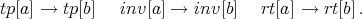
-
- Arguments: expr is an algebraic expression. aListOfRules is a single rule or list of rules
specifying the substitution to be made. On = save rules to Rules.temp, temporarily
over-riding SaveRules[Off]. ’Off’ can not over-ride SaveRules[On].
-
- Comments / Limitations: None
4.1.11 Transform[expr,aListOfRules]
-
- Aliases: Transform
-
- Description: None
-
- Arguments: Transform is essentially a more efficient version of Substitute. It has the same
functionality as Substitute.
-
- Comments / Limitations: expr is an algebraic expression. aListOfRules is a single rule or
list of rules specifying the substitution to be made.
Beware: Transform only applies rules once rather than repeatedly.
4.1.12 GrabIndeterminants[ aListOfPolynomialsOrRules]
-
- Aliases: none
-
- Description: GrabIndeterminants[L] returns the indeterminates found in the list
of (noncommutative) expressions or rules L. For example, GrabIndeterminants[
{ x**Inv[x]**x + Tp[Inv[x+a]], 3 + 4 Inv[a]**b**Inv[a] + x }] returns
![{ x, Inv[x], Tp[Inv[x+a]], Inv[a], b }.](NCBIGDOC9x.png)
-
- Arguments: aListOfPolynomialsOrRules is a list of (noncommutative) expressions or rules.
-
- Comments / Limitations:
4.1.13 GrabVariables[ aListOfPolynomialsOrRules ]
-
- Aliases: none
-
- Description: GrabVariables[ aListOfPolynomialsOrRules ] returns the variables found
in the list of (noncommutative) expressions or rules aListOfPolynomialsOrRules. It is
similar to the Mathematica command Variables[] which takes as an argument a list
of polynomials in commutative variables or functions of variables. For example,
![GrabVariables[ { x**Inv[x]**x + Tp[Inv[x+a]], 3 + 4 Inv[a]**b**Inv[a] + x }]](NCBIGDOC10x.png) returns
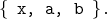
returns
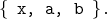
-
- Arguments: aListOfPolynomialsOrRules is a list of (noncommutative) expressions or rules.
-
- Comments / Limitations:
4.1.14 NCBackward[expr]
-
- Aliases: NCB
-
- Description: It applies the rules
![inv[Id - B * *A] * *B → B * *inv[Id - A * *B]](NCBIGDOC12x.png)
![inv[Id - B * *A] * *inv[A] → inv[A] * *inv[Id - A * *B]](NCBIGDOC13x.png)
-
- Arguments: expr is an algebraic expression.
-
- Comments / Limitations: None
4.1.15 NCForward[expr]
-
- Aliases: NCF
-
- Description: It applies the rules
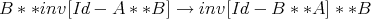
![inv[B] * *inv[Id - B * *A] → inv[Id - B * *A] * *inv[A]](NCBIGDOC15x.png)
-
- Arguments: expr is an algebraic expression.
-
- Comments / Limitations: None
4.1.16 NCMonomial[expr]
-
- Aliases: None
-
- Description: NCMonomail changes the look of an expression by replacing nth integer
powers of the NonCommutative variable x, with the product of n copies of x. For
example, NCMonomial[2x2 + 5x4] evaluates to 2x **x + 5x **x **x **x and
NCMonomial[(x2) **z **x] evaluates to x **x **z **x.
-
- Arguments: Any noncommutative expression.
-
- Comments / Limitations: The program greatly eases the task of typing in polynomials. For
example, instead of typing x = x**x**x**x**x**x**x**x**x**x**x**x**y**x**x,
one can type x = NCMono[(x12)**y**(x2)]. NCMono expands only integer exponents.
This program will be (or has been, depending on the version of code which you have)
superseded by NCMonomial and NCUnMonomial. NCMonomial implements the same
functionality as NCMonomial and NCUnMonomial reverses the process. Caution:
Mathematica treats x**y2 as (x**y)2 and so to have Mathematica acknowledge x**y2
then input x**(y2) exactly. This has nothing to do with NCAlgebra or NCMonomial.
4.1.17 NCUnMonomial[expr]
-
- Aliases: None
-
- Description: NCUnMonomial reverses what NCMonomial does. NCUnMonomial changes
the look of an expression by replacing a product of n copies of x with xn. For
example, NCUnMonomial[2x **x + 5x **x **x **x] evaluates to 2x2 + 5x4 and
NCUnMonomial[x **x **z **x] evaluates to (x2) **z **x.
-
- Arguments: Any noncommutative expression.
-
- Comments / Limitations: See NCMonomial. NCAlgebra does not effectively manipulate
expressions involving powers (such as (x2))
4.2 Simplification
This area is under developement so stronger commands will appear in later versions. What we
mean by simplify is not in the spirit of Mathematica’s Simplify. They tend to factor expressions so
that the expressions become very short. We expand expressions apply rules to the expressions
which incorporate special relations the entries satisfy. Then we rely on cancelation of terms. The
theoretical background lies in noncommutative Gröbner basis theory, and the rules we are
implementing come from papers of Helton, Stankus and Wavrik [IEEE TAC March
1998].
The commands in this section are designed to simplify polynomials in a, b, inv[S - a **b],
inv[S - b **a], inv[S - a], inv[S - b] and a few slightly more complicated inverses.
The commands in order of strength are NCSR, NCS1R, NCS2R. Of course, for a
stronger the command, more rules get applied and so the command takes longer to
run.
First, NCS1R normalizes inv[S - a **b] to S-1 * inv[1 - (a **b)∕S] provided S is a
commutative expression (only works for numbers S in version 0.2 of NCAlgebra). The following list
of rules are applied.
(0) inv[-1 + a] →-inv[1 - a]
(1) inv[1 - a] (a - b) inv[1 - b] → inv[1 - a] - inv[1 - b]
(2) inv[1 - ab] inv[b] → inv[1 - ba] a + inv[b]
(3) inv[1 - ab] ab → inv[1 - ab] - 1
(4) abinv[1 - ab] → inv[1 - ab] - 1
(5) inv[c] inv[1 - cb] → inv[1 - bc] inv[c]
(6) b inv[1 - ab] → inv[1 - ba]b
The command NCS2R increases the range of expressions to include inv[poly], but the
reductions for each of these inverses is considerably less powerful than for the case of
inv[1 - ab].
An example: if expr = a**inv[a + b] + inv[c-a] **(a-c) + inv[c + d] **(c + d + e), then the first
reduction using the list of rules in NCSR gives a**inv[a + b] + inv[c + d] **einv[a] **(a-b) **inv[b]
and the second reduction gives inv[b] - inv[a] which is the output from NCSR[expr].
NCSimplify0Rational is an old attempt at simplification. We do not use it much.
4.2.1 NCSimplifyRational[ expr ], NCSimplify1Rational[ expr ], and NCSimplify2Rational[
expr ]
-
- Aliases: NCSR
-
- Description: The objective is to simplify expressions which include polynomials and
inverses of very simple polynomials. These work by appling a collection of relations
implemented as rules to expr. The core of NCSimplifyRational is NCSimplify1Rational
and NCSimplify2Rational; indeed roughly NCSimplifyRational[expr]
= NCSimplify1Rational[NCSimplify2Rational[expr]] together with some NCExpand’s.
NCSimplify1Rational[expr] contains one set of rules while NCSimplify2Rational[expr]
contains another.
-
- Arguments: expr is an algebraic expression.
-
- Comments / Limitations: Works only for a specialized class of functions.
4.2.2 NCSimplify1Rational[expr]
-
- Aliases: NCS1R
-
- Description: It applies a collection of relations implemented as rules to expr. The goal is to
simplify expr.
-
- Arguments: expr is an algebraic expression.
-
- Comments / Limitations: WARNING:
NCS1R does not first do an ExpandNonCommutativeMultiply. Therefore, it may be
the case that one can miss some simplification if expr is not expanded out. The
solution, of course, is to call ExpandNonCommutativeMultiply before calling NCS1R.
ExpandNonCommutativeMultiply is called from NCSR.
First, NCS1R normalizes inv[S -a**b] to S-1 *inv[1 - (a**b)∕S] provided S is s a
commutative expression (only works for numbers S in version 0.2 of NCAlgebra). The
the following list of rules are applied.
(0) inv[-1 + a] →-inv[1 - a]
(1) inv[1 - a] (a - b) inv[1 - b] → inv[1 - a] - inv[1 - b]
(2) inv[1 - ab] inv[b] → inv[1 - ba] a + inv[b]
(3) inv[1 - ab] ab → inv[1 - ab] - 1
(4) abinv[1 - ab] → inv[1 - ab] - 1
(5) inv[c] inv[1 - cb] → inv[1 - bc] inv[c]
(6) b inv[1 - ab] → inv[1 - ba]b
In the notation of papers [HW], [HSW], these rules implement a superset of the union
of the Gröbner basis for EB and the Gröbner basis for RESOL.
4.2.3 NCSimplify2Rational[expr]
-
- Aliases: NCS2R
-
- Description: You need this for expressions involving inv[ polynomial ] where the polynomial
is not of the form SId - X **Y
-
- Arguments: expr is an algebraic expression.
-
- Comments / Limitations: If the polynomial is too complicated, this may not help very
much.
4.3 Vector Differentiation
4.3.1 DirectionalD[expr, aVariable, h]
-
- Aliases: DirD
-
- Description: Takes the Directional Derivative of expression expr with respect to the variable
aV ariable in direction h.
-
- Arguments: expr is an expression containing var. aV ariable is a variable. h is the direction
which the derivative is taken in.
-
- Comments / Limitations: None.
4.3.2 Grad[expr, aVariable]
-
- Aliases: Grad, NEVER USE Gradient
-
- Description: Grad[expr,aV ariable] takes the gradient of expression expr with respect to
the variable aV ariable. Quite useful for computations with quadratic Hamiltonians in
H∞ control. BEWARE Gradient calls the Mma gradient and makes a mess.
-
- Arguments: expr is an expression containing var. aV ariable is a variable.
-
- Comments / Limitations: This only works reliably for quadratic expressions. It is not even
correct on all of these. For example, Grad[a **x + a **tp[x],x] returns 2tp[a]. The
reason is fundamental mathematics, not programming. If a is a row vector and x is a
column vector, then a **x is a number, but a **tp[x] is not.
4.3.3 CriticalPoint[expr, aVariable]
-
- Aliases: Crit, Cri
-
- Description: It finds the value of aV ariable which makes the gradient of the expression expr
with respect to the variable aV ariable equal to 0.
-
- Arguments: expr is an expression containing aV ariable. aV ariable is a variable.
-
- Comments / Limitations: Uses the Grad and NCSolve functions. Both Grad and NCSolve
are severely limited. Therefore, the CriticalPoint command has a very limited range of
applications.
4.3.4 NCHessian[afunction, {X1,H1},…,{Xk,Hk} ]
-
- Aliases: None.
-
- Description: NCHessian[afunction,{X1,H1},{X2,H2},…,{Xk,Hk} ]
computes the Hessian of a afunction of noncommutting variables and coefficients. The
Hessian recall is the second derivative. Here we are computing the noncommutative
directional derivative of a noncommutative function. Using repeated calls to
DirectionalD, the Hessian of afunction is computed with respect to the variables
X1,X2,…,Xk and the search directions H1 , H2 , … , Hk. The Hessian  Γ of a function
Γ is defined by
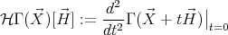 One can easily show that the second derivative of a hereditary symmetric noncommutative
rational function Γ with respect to one variable X has the form
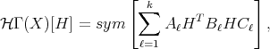 where Aℓ, Bℓ, and Cℓ are functions of X determined by Γ. (An analogous expression
holds for more variables.) The Hessian will always be quadratic with respect to 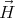.
(A noncommutative polynomial in variables H1, H2, … , Hk, is said to be quadratic if
each monomial in the polynomial expression is of order two in the variables H1, H2,
…, Hk.)
Γ of a function
Γ is defined by
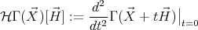 One can easily show that the second derivative of a hereditary symmetric noncommutative
rational function Γ with respect to one variable X has the form
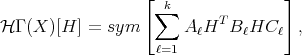 where Aℓ, Bℓ, and Cℓ are functions of X determined by Γ. (An analogous expression
holds for more variables.) The Hessian will always be quadratic with respect to 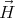.
(A noncommutative polynomial in variables H1, H2, … , Hk, is said to be quadratic if
each monomial in the polynomial expression is of order two in the variables H1, H2,
…, Hk.)
-
- Arguments: afunction is a function of the variables X1,X2,…,Xk. The Hessian will be
computed with respect to the search directions H1 , H2 , … , Hk.
For example, suppose F(x,y) = x + x **y + y **x. Then,
NCHessian[F,{x,h},{y,k}] gives 2h**k + 2k **h As another example, if G(x,y,z) =
inv[y] + z **x, then NCHessian[G,{x,h},{y,k},{z,i}] gives 2i **h + 2inv[y] **k *
*inv[y] **k **inv[y].
The results of NCHessian can be factored into the form vtMv by calling
NCMatrixofQuadratic. (see NCMatrixofQuadratic).
-
- Comments / Limitations: None.
4.4 Block Matrix Manipulation
By block matrices we mean matrices with noncommuting entries.
The Mathematica convention for handling vectors is tricky.
is a 1×3 matrix or a row vector
is a 3×1 matrix or a column vector
is a vector but NOT A MATRIX. Indeed whether it is a row or column vector depends on the
context. DON’T USE IT. Always remember to use TWO curly brackets on your vectors or there
will probably be trouble.
As of NCAlgebra version 3.2 one can handle block matrix manipulation two different ways. One
is the old way as described below where you use the command MatMult[A, B] to multiply block
matrices A and B and tpMat[A] to take transposes. The other way is much more pleasing though
still a little risky. First you use the NCGuts[] with the Options NCStrongProduct1 →
True to change ** to make block matrices multiply corectly. Further invoke the Option
NCStrongProduct2 → True to strengthen the power of **. Now one does not have to use
MatMult and tpMat; just use ** and tp instead it recognizes matrix sizes and multiplies
correctly.
4.4.1 MatMult[x, y, …]
-
- Aliases: MM
-
- Description: MatMult multiplies matrices. The Mathematica code executed for
MatMult[x,y] is Inner[ NonCommutativeMultiply, x, y, Plus];
-
- Arguments: x is a block matrix, and y is a block matrix.
-
- Comments / Limitations: MatMult can take any number of input parameters. For
example, MatMult[a, b, c, d] will give the same result as MatMult[a, MatMult[b,
MatMult[c, d]] ].
4.4.2 ajMat[u]
-
- Aliases: None
-
- Description: ajMat[u] returns the transpose of the block matrix u. The Mathematica code
is Transpose[Map[aj[#]&,u, 2]];
-
- Arguments: u is a block m × n matrix.
-
- Comments / Limitations: None
4.4.3 coMat[u]
-
- Aliases: None
-
- Description: coMat[u] returns the transpose of the block matrix u. The Mathematica code
is [Map[co[#]&,u, 2]];
-
- Arguments: u is a block m × n matrix
-
- Comments / Limitations: None
4.4.4 tpMat[u]
-
- Aliases: None
-
- Description: tpMat[u] returns the transpose of the block matrix u. The Mathematica is
Transpose[Map[tp[#]&,u, 2]];
-
- Arguments: u is a block m × n matrix
-
- Comments / Limitations: None
4.4.5 NCMToMatMult[expr]
-
- Aliases: None
-
- Description: Sometimes one develops an expression in which ** occurs between matrices.
This command takes all ** and converts them to MatMult. The Mathematica code
executed is expr//.NonCommutativeMultiply → MatMult;
-
- Arguments: expr is an algebraic expression. This and its inverse (TimesToNCM) are
important in manipulating block matrices. One can use
 instead of this command, since that is all that this command amounts to.
instead of this command, since that is all that this command amounts to.
-
- Comments / Limitations: None
4.4.6 TimesToNCM[expr]
-
- Aliases: TTNCM
-
- Description: The Mathematica code executed is
expr∕.Times → NonCommutativeMultiply
-
- Arguments: expr is an algebraic expression.
-
- Comments / Limitations: It changes commutative multiplication (Times) to
NonCommutative multiplication.
4.4.7 Special Operations with Block Matrices
In 1999, we produced commands for LU decomposition and Cholesky decomposition of
an inversion of matrices with noncommutative entries. These replace older commands
GaussElimination[X] and invMat2[mat] for 2 × 2 block matrices which are no longer documented.
The next 6 commands do that.
4.4.8 NCLDUDecomposition[aMatrix, Options]
-
- Aliases: None.
-
- Description: NCLDUDecomposition[X] yields the LDU decomposition for a square matrix
X. It returns a list of four elements, namely L,D,U, and P such that PXPT = LDU.
The first element is the lower triangular matrix L, the second element is the diagonal
matrix D, the third element is the upper triangular matrix U, and the fourth is the
permutation matrix P (the identity is returned if no permutation is needed). As an
option, it may also return a list of the permutations used at each step of the LDU
factorization as a fifth element.
Suppose X is given by X = {{a,b, 0},{0,c,d},{a, 0,d}}. The command
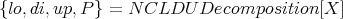 returns matrices, which in MatrixForm are:
![( ) ( )
1 0 0 a 0 0
lo = ( 0 1 0 ) di = ( 0 c 0 )
1 - b * *inv[c] 1 0 0 d + b * *inv[c] * *d
( ) ( )
1 inv[a] * *b 0 1 0 0
up = ( 0 1 inv[c] * *d ) P = ( 0 1 0 )
0 0 1 0 0 1](NCBIGDOC21x.png)
As matrix X is 3×3, one can provide 2 permutation matrices. Let those permutations
be given by l1 = {3, 2, 1} and l2 = {1, 3, 2}, that means:

just as in NCPermutationMatrix. The command
![{lo,di,up, P}= N CLDU Decomposition[X, P ermutation → {l1, l2}]](NCBIGDOC23x.png) returns matrices, which in MatrixForm are:
returns matrices, which in MatrixForm are:
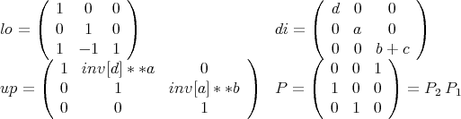
It can be checked that PT lo di up P = X:
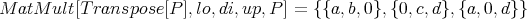
-
- Arguments: X is a square matrix n by n. The default Options are:
{Permutation → False, CheckDecomposition → False,
NCSimplifyPivots → False, StopAutoPermutation → False,
ReturnPermutation → False, Stop2by2Pivoting → False }. If permutation
matrices are to be given, they should be provided as Permutation → {l1, l2,  ,
ln}, where each li is a list of integers (see the command NCPermutationMatrix[]). If
CheckDecomposition is set to True, the function checks if PXPT is identical to LDU.
Where P = P1P2
,
ln}, where each li is a list of integers (see the command NCPermutationMatrix[]). If
CheckDecomposition is set to True, the function checks if PXPT is identical to LDU.
Where P = P1P2 Pn, and each Pi is the permutation matrix associated with each
li.
Pn, and each Pi is the permutation matrix associated with each
li.
Often a prospective pivot will appear to be nonzero in Mathematica even though
it reduces to zero. To ensure we are not pivoting with a convoluted form of zero,
we simplify the pivot at each step. By default, NCLDUDecomposition converts the
pivot from non-commutative to commutative and then simplifies the expression. If
the commutative form of the pivot simplifies to zero, Mathematica scrolls down the
diagonal looking for a pivot which does not simplify to zero. If all the diagonal entries
simplify to zero utilizing the CommuteEverything[] command, the process is repeated
using NCSimplifyRational.
This strategy is incorporated for two main reasons. One is that for large matrices
it is much faster. Secondly, NCSimplifyRational does not always completely
simplify complicated expressions. Setting NCSimplifyPivots → True bypasses
CommuteEverything and immediately applies
NCSimplifyRational to each pivot. NCLDUDecomposition will automatically pivot if
the current pivot at a particular iteration is zero. If the user utilized the Permutation
option, then the permutation designated will be temporarily disregarded. However,
NCLDUDecomposition will try and use the given permutation list for the next step. In
this way,
NCLDUDecomposition follows the user permutation as closely as possible. If
StopAutoPermutation → True, then NCLDUDecomposition will not automatically
pivot and will strictly adhere to the user’s permutation, attempting to divide by zero
if need be. This will allow the user to determine which permutations are not possible.
Because NCLDUDecomposition will automatically pivot when necessary by default, the
ReturnPermutation was created so that the permutation used in the decomposition
can be returned to the user for further analysis if set to True.
To explain the last option it is somewhat necessary for the user to have an idea of
how the pivoting strategy works. The permutations used are always symmetrically
applied. Because of this, we can only place other diagonal elements in the (1,1) position.
However, it is possible to place any off diagonal element in the (2,1) position. Thus
our strategy is to pivot only with diagonal elements if possible. If all the diagonal
elements are zero, then a permutation matrix is used to place a nonzero entry in the
(2,1) position which will automaticaly place a nonzero entry in the (1,2) position if
the matrix is symmetric. Then, instead of using the (1,1) entry as a pivot, the 2×2
submatrix starting in the (1,1) position is used as a block pivot. This has the effect
of creating an LDU decomposition where D is a block diagonal matrix with 1×1 and
2×2 blocks along the diagonal. (Note: The pivots are precisely the diagonal entries
of D.) Setting Stop2by2Pivoting → True will halt 2 × 2 block pivoting, returning
instead, the remaining undecomposed block with zeros along the diagonal as a final
block diagonal entry.
-
- Comments / Limitations: NCLDUDecomposition automatically assumes invertible any
expressions (pivot) it needs to be invertible. Also, the 2 × 2 pivoting strategy assumes
that the matrix is symmetric in that it only ensures that the (2,1) entry is nonzero
(assuming by symmetry that the (1,2) is also zero). The pivoting strategy chooses
its pivots based upon the smallest leaf count invoking the Mathematica command
LeafCount[]. It will choose the smallest nonzero diagonal element basing size upon
the leaf count. This strategy is incorporated in an attempt to find the simplest LDU
factorization possible. If a 2 × 2 pivot is used and ReturnPermutation is set to True
then at the end of the permutation list returned will be the string 2by2 permutation.
4.4.9 NCAllPermutationLDU[aMatrix]
-
- Aliases: None.
-
- Description: NCAllPermutationLDU[aMatrix] returns the LDU decomposition of a
matrix for all possible permutations. The code cycles through all possible permutations
and calls NCLDUDecomposition for each one.
-
- Arguments: aMatrix is a square matrix. The default options for NCAllPermutationLDU
are: PermutationSelection → False, CheckDecomposition → False,
NCSimplifyPivots → False, StopAutoPermutation → False, ReturnPermutation
→ False, Stop2by2Pivoting → False. All of these options have the same effect
as in NCLDUDecomposition, except for PermutationSelection. PermutationSelection
should be a list of numbers between 1 and the number of possible permutations.
NCAllPermutationLDU will use this list to choose the permutations from its
canonical list to decompose the matrix using NCLDUDecomposition. For example,
PermutationSelection can be {1,…,n}.
-
- Comments / Limitations: The output is a list of all successful outputs from
NCLDUDecomposition. Note that some permutations may lead to a zero pivot in the
process of doing the LDU decomposition. In that case, the LDU decomposition is not
well defined, actually in Mathematica one gets a lot of ∞ signs, but this output will
not be included in the list of successful outputs.
4.4.10 NCInverse[aSquareMatrix]
-
- Aliases: None.
-
- Description: NCInverse[m] gives a symbolic inverse of a matrix with noncommutative
entries.
-
- Arguments: m is an n × n matrix with noncommutative entries.
-
- Comments / Limitations: This command is primarily used symbolically and
is not guarenteed to work for any specific examples. Usually the elements
of the inverse matrix (m-1) are huge expressions. We recommend using
NCSimplifyRational[NCInverse[m]] to improve the formula you get. In some cases,
NCSimplifyRational[m-1m] does not provide the identity matrix, even though it
does equal the identity matrix. The formula we use for NCInverse[] comes from the
LDU decomposition. Thus in principle it depends on the order chosen for pivoting even
if the inverse of a matrix is unique.
4.4.11 NCPermutationMatrix[aListOfIntegers]
-
- Aliases: None.
-
- Description: NCPermutationMatrix[aListOfIntegers] returns the permutation matrix
associated with the list of integers. It is just the identity matrix with its columns
re-ordered.
-
- Arguments: aListOfIntegers is an encoding which specifies where the 1’s occur in each
column. e.g., aListOfintegers = {2, 4, 3, 1} represents the permutation matrix
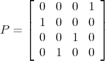
-
- Comments / Limitations: None.
4.4.12 NCMatrixToPermutation[aMatrix]
-
- Aliases: None.
-
- Description: NCMatrixToPermutation[aMatrix] returns the permutation associated with
the permutation matrix, aMatrix. Basically, it is the inverse of NCPermutationMatrix.
-
- Arguments: aMatrix must be matrix whose columns (or rows) can be permuted to yield the
identity matrix. In other words, aMatrix must be a permutation matrix. For example,
if m = {{0, 0, 0, 1},{1, 0, 0, 0},{0, 0, 1, 0},{0, 1, 0, 0}}, then NCPermutationMatrix[m]
gives {2, 4, 3, 1}.
-
- Comments / Limitations: None.
4.4.13 NCCheckPermutation[SizeOfMatrix, aListOfPermutations]
-
- Aliases: None.
-
- Description: If aListOfPermutations is consistent with the matrix size, SizeOfMatrix,
then the output is valid permutation list. If not, the output is not valid
permutation list.
-
- Arguments: The size of a square matrix (an integer) and a list of permutations.
-
- Comments / Limitations: If the SizeOfMatrix is n, then aListOfPermutations must
be a list of n - 1 permutations of the integers 1 through n. Since this command is
generally called within the context of NCLDUDecomposition the list of permutations
must correspond to a list that can be used within the command.
4.4.14 Diag[aMatrix]
-
- Aliases: None.
-
- Description: Returns the elements of the diagonal of a matrix.
-
- Arguments: None.
-
- Comments / Limitations: The code is Flatten[MapIndexed[Part,m]].
4.4.15 Cascade[P, K]
-
- Aliases: None
-
- Description: Cascade[P,K] is the composition of P, K as is found is systems engineering.
-
- Arguments: P is a 2×2 block matrix. K is a symbol.
-
- Comments / Limitations: frequency response functions grow from this.
4.4.16 Chain[P]
-
- Aliases: None
-
- Description: Chain[P] returns the chain matrix arising from P as is found in systems
engineering.
-
- Arguments: P is a block 2×2 matrix.
-
- Comments / Limitations: Chain[ ] assumes appropriate matrices are invertible.
4.4.17 Redheffer[P]
-
- Aliases: None
-
- Description: Redheffer[P] gives the inverse of chain.
Redheffer[Chain[P]] = P = Chain[Redheffer[P]].
-
- Arguments: P is a block 2 × 2 matrix.
-
- Comments / Limitations: Redheffer[P] assumes the invertiblity of the entries of P.
4.4.18 DilationHalmos[x]
-
- Aliases: None
-
- Description: DilationHalmos[x] gives block 2 × 2 matrix which is the Halmos dilation of
x
-
- Arguments: x is a symbol
-
- Comments / Limitations: u = DilationHalmos[x] has the property u is unitary, that
is, MatMult[u,tpMat[u]] == IdentityMatrix[2] and MatMult[tpMat[u],u] ==
IdentityMatrix[2].
4.4.19 SchurComplementTop[M]
-
- Aliases: None
-
- Description: SchurComplementTop[M] returns the Shur Complement of the top diagonal
entry of a block 2 × 2 matrix M.
-
- Arguments: M is a block 2 × 2 matrix.
-
- Comments / Limitations: Assumes invertibility of a diagonal entry.
4.4.20 SchurComplementBtm[M]
-
- Aliases: None
-
- Description: SchurComplementBtm[M] returns the ShurComplement of the bottom
diagonal entry of a block 2 × 2 matrix M.
-
- Arguments: M is a block 2 × 2 matrix.
-
- Comments / Limitations: Assumes invertibility of a diagonal entry.
4.5 Complex Analysis
4.5.1 A tutorial
The package in the file ComplexRules.m defines three objects:
-
- ∙ ComplexRules, transformation rules
-
- ∙ ComplexCoordinates, a function that applies rules to an expression.
-
- ∙ ComplexD[], takes complex derivatives.
The ComplexRules package is for handling complex algebra and differentiation. The algebra
part of ComplexRules has been pretty much superceeded by the standard Mathematica command
ComplexExpand[] so we advise using that. Our complex differentiation is still quite useful.
ComplexRules.m may not work well with ReIm.m, see the warning at the end of this
note.
In[1]:= <<ComplexRules‘
In[2]:= y = Re[(e + w z )ˆ2]ˆ2
2 2
Out[2]= Re[(e + w z) ]
|
To rewrite this in terms of variables and their conjugates, apply the list of rules ComplexRules
as follows
In[3]:= y //. ComplexRules
2 2 2
((e + w z) + (Conjugate[e] + Conjugate[w] Conjugate[z]) )
Out[3]= -----------------------------------------------------------
4
|
You can get the same result with the function ComplexCoordinates[]:
In[4]:= ComplexCoordinates[y]
2 2 2
((e + w z) + (Conjugate[e] + Conjugate[w] Conjugate[z]) )
Out[4]= -----------------------------------------------------------
4
|
Suppose that you know that in the expression above, e ranges in the unit circle of the complex
plane, and that w is real. To simplify you can do this:
In[5]:= % /. {Conjugate[e]->1/e,Conjugate[w]->w}
2 1 2 2
((e + w z) + (- + w Conjugate[z]) )
e
Out[5]= -------------------------------------
4
|
Complex derivatives are easy to produce with ComplexD[]:
In[6]:= ComplexD[ y , z]
2
Out[6]= w (e + w z) ((e + w z)
2
+ (Conjugate[e] + Conjugate[w] Conjugate[z]) )
|
Here is a differentiation with respect to Conjugate[w]:
In[7]:= ComplexD[ y , Conjugate[w]]
Out[7]= Conjugate[z] (Conjugate[e] + Conjugate[w] Conjugate[z])
2 2
> ((e + w z) + (Conjugate[e] + Conjugate[w] Conjugate[z]) )
|
A mixed second order partial derivative is shown below:
In[8]:= ComplexD[ y , Conjugate[z] , z]
Out[8]= 2 w (e + w z) Conjugate[w]
> (Conjugate[e] + Conjugate[w] Conjugate[z])
|
Repeated differentiation is also possible:
In[9]:= ComplexD[ y , {Conjugate[z],2}]
2 2
Out[9]= 2 Conjugate[w] (Conjugate[e] + Conjugate[w] Conjugate[z]) +
2 2
> Conjugate[w] ((e + w z) + (Conjugate[e] + Conjugate[w]
2
> Conjugate[z]) )
|
Finally, we point out that it is possible that applying ComplexRules to an expression and
applying ComplexCoordinates to it may yield different output (the same mathematically of
course). Reason: ComplexCoordinates applies ComplexRules to the expression, in addition to a
rule for transforming Abs[z] into Sqrt[ z Conjugate[z]]. Example:
In[10]:= Abs[zˆ2 + 1]ˆ2 //. ComplexRules
2 2
Out[10]= Abs[1 + z ]
In[11]:= ComplexCoordinates[ % ]
2 2
Out[11]= (1 + z ) (1 + Conjugate[z] )
|
ComplexD[] handles Abs[]2 etc.:
In[12]:= ComplexD[ Abs[zˆ2 + 1]ˆ2,z]
2
Out[12]= 2 z (1 + Conjugate[z] )
|
ComplexD[] also handles Abs[]1 but the answer does not look as pretty:
In[13]:= ComplexD[ Abs[zˆ2 + 1],z]
2
z (1 + Conjugate[z] )
Out[13]= ----------------------------------
2 2
Sqrt[(1 + z ) (1 + Conjugate[z] )]
|
WARNING: The standard Mathematica package ReIm.m sets things so that expressions of
complex variables “z” are rewritten in terms of Re[z], Im[z] (for example).
Compare this to the output of functions in the package ComplexRules.m, where the expressions
of complex variables “z” are given in terms of z, Conjugate[z].
You may load both ReIm.m and ComplexRules.m, but keep in mind that the objectives of the
packages conflict. Furthermore, programs that need ComplexRules to run will sometimes not work
if ReIm.m has been loaded.
Mathematica can manipulate complex analysis via X + I Y where X and Y are
commutative (e.g., numbers). However, it is often more convenient to calculate in terms of z
and the conjugate of z. We implement a few commands in the file NCComplex.m. We
discuss these commands below. One may also look at the file NCComplex.m for further
documentation.
4.5.2 ComplexRules
-
- Aliases: None
-
- Description: ComplexRules is a set of replacement rules for writing expressions in terms
of the variables and their complex conjugates. For example, use this with input
containing numbers and variables, as well as operators/functions such as + - * ∕,
Re[], Im[], Conjugate[], Exp[], Power[], Sin[], Cos[] and others. Apply the command
expr//.ComplexRules. Try the following example:
Re[(1 + zw)2]2 //.ComplexRules
-
- Arguments: None
-
- Comments / Limitations: This only works for expressions defined with the commutative
multiplication.
4.5.3 ComplexCoordinates[expr]
-
- Aliases: None
-
- Description: ComplexCoordinates[expr] expands expr in terms of the variables and
their complex conjugates. The difference between ComplexCoordinates[expr] and
ComplexRules is in the case Abs[z]2//.ComplexRules. This case returns the same
expression instead of z and Conjugate[z]. If you desire to use the latter expression,
you can use ComplexCoordinates[expr]. This function replaces Abs[z] by Sqrt[z
Conjugate[z]], after applying ComplexRules.
-
- Arguments: expr is any expression with + - * ∕, Re[], Im[], Conjugate[], Exp[], Power[],
Sin[], Cos[] and others
-
- Comments / Limitations: This only works for expressions defined with the commutative
multiplication.
4.5.4 ComplexD[expr, aVariable]
-
- Aliases: None
-
- Description: ComplexD[expr,aV ariable] calculates the derivative of the complex expression
expr with respect to the “complex” variable aV ariable. You can also calculate the
derivative with respect to Conjugate[aV ariable]. Try these examples:
ComplexD[Conjugate[Exp[z + 1∕Conjugate[z]]2],z];
ComplexD[Re[(1 + zw)2]2,w];
ComplexD[Abs[1∕(e2 - 1) - z]2,z];
ComplexD[Conjugate[Exp[z + 1∕Conjugate[z]]2],Conjugate[z]];
Here is a second order derivative:
ComplexD[Conjugate[Exp[z + 1∕Conjugate[z]]2,z, 2];
-
- Arguments: expr is a complex expression. aV ariable is the variable in which to take the
derivative with respect to.
-
- Comments / Limitations: This only works for expressions defined with the commutative
multiplication.
4.6 Setting symbols to commute or not commute
4.6.1 SetNonCommutative[A, B, C, …]
-
- Aliases: SNC, SetNC
-
- Description: SetNonCommutative[A, B, C, …] sets all the symbols A, B, C, … to be
noncommutative. The lower case letters a, b, c, … are assumed noncommutative by
Mathematica default as are functions of noncommutative variables. The functions tp[]
and aj[] are set noncommutative by NCAlgebra for any argument, commutative or
noncommutative. We may change this.
-
- Arguments: Symbols separated by commas
-
- Comments / Limitations: None
4.6.2 CommuteEverything[expr]
-
- Aliases: CE
-
- Description: It changes NonCommutativeMultiply to Times in expr.
-
- Arguments: expr is an algebraic expression.
-
- Comments / Limitations: Very useful for getting ideas in the middle of a complicated
calcuation. If expr has you baffled, type exprcom = CE[expr]. exprcom is commutative
and therefore is easy to analyze. Now expr is uneffected, so you can get back to working
on it armed with new ideas.
4.6.3 SetCommutative[a, b, c, …]
-
- Aliases: None
-
- Description: SetCommutative[a, b, c, …] sets all the symbols a, b, c, … to be commutative.
-
- Arguments: Symbols separated by commas
-
- Comments / Limitations: None
4.6.4 SetCommutingOperators[b,c]
-
- Aliases: None
-
- Description: SetCommutingOperators takes exactly two parameters.
SetCommutingOperators[b, c] will implement the definitions which follow. They are in
pseudo-code so that the meaning will not be obscured b ** c becomes c ** b if LeftQ[b,
c]; and c ** b becomes b ** c if LeftQ[b, c]; ). See SetCommutingFunctions and LeftQ.
-
- Arguments: b, c are symbols.
-
- Comments / Limitations: NOTE: The above implementation will NOT lead to infinite
loops.
WARNING: If one says SetCommutingOperators[b, c] and then sets only LeftQ[c,b],
then neither of the above rules will be executed. Therefore, one must remember the
order of the two parameters in the statement. One obvious helpful habit would be to
use alphabetical order (i.e., say SetCommutingOperators[a,b] and not the reverse).
4.6.5 LeftQ[expr]
-
- Aliases: None
-
- Description: See SetCommutingFunctions and SetCommutingOperators.
-
- Arguments: expr is an algebraic expression.
-
- Comments / Limitations: None
4.6.6 CommutativeQ[X]
-
- Aliases: CQ
-
- Description: CommutativeQ[X] is True if X is commutative, and False if X is
noncommutative.
-
- Arguments: X is a symbol.
-
- Comments / Limitations: See the description of SetNonCommutative for the defaults.
4.6.7 CommutativeAllQ[expr]
-
- Aliases: None
-
- Description: CommutativeAllQ[expr] is True if expr does not have any non-commuting
sub-expressions, and False otherwise.
-
- Arguments: expr is an algebraic expression.
-
- Comments / Limitations: None
4.7 Operations on elements in an algebra
4.7.1 inv[x]
-
- Aliases: None
-
- Description: Inverse – a ** inv[a]=inv[a] ** a=Id
-
- Arguments: x is a symbol.
-
- Comments / Limitations: Warning: NCAlgebra does not check that inv[x] exists or even
that it makes sense (e.g. non-square matrices). This is the responsibility of the user.
4.7.2 invL[x]
-
- Aliases: invL
-
- Description: Left inverse – invL[a] ** a=Id
-
- Arguments: x is a symbol
-
- Comments / Limitations: Warning. NCAlgebra does not check that invL[x] exists. This is
the responsibility of the user.
4.7.3 invR[x]
-
- Aliases: invR
-
- Description: invR[x] is the right inverse – a ** invR[a]=Id
-
- Arguments: x is a symbol
-
- Comments / Limitations: Warning. NCAlgebra does not check that invR[x] exists. This is
the responsibility of the user.
4.7.4 invQ[x]
-
- Aliases: None
-
- Description: invQ[m] = True forces invR[m] and invL[m] to be rewritten as inv[m]
-
- Arguments: x is an expression.
-
- Comments / Limitations: We never use this command.
4.7.5 ExpandQ[inv]
-
- Aliases: None
-
- Description: If ExpandQ[inv] is set to True, an inverse of a product will be expanded to
a product of inverses. If it is set to False, then a product of inverses will be rewritten
to be a inverse of a product.
-
- Arguments: inv
-
- Comments / Limitations: None
4.7.6 ExpandQ[tp]
-
- Aliases: None
-
- Description: If ExpandQ[tp] is set to True, a transpose of a product will be expanded to
a product of transposes. If it is set to False, then a product of transposes will be
rewritten to be a transpose of a product.
-
- Arguments: tp
-
- Comments / Limitations: None
4.7.7 OverrideInverse
-
- Aliases: None
-
- Description: OverrideInverse is a variable which is either True or False.
-
- Arguments: If OverrideInverse is set to True, then the replacement of invL and invR by
inv (when x is invertible) is suppressed even if invQ is True. The default is False.
-
- Comments / Limitations: None
4.7.8 aj[expr]
-
- Aliases: None
-
- Description: aj[expr] takes the adjoint of the expression expr. Note that basic laws like
aj[a **b] = aj[b] **aj[a] are automatically executed.
-
- Arguments: expr is an algebraic expression
-
- Comments / Limitations: None
4.7.9 tp[expr]
-
- Aliases: None
-
- Description: tp[expr] takes the transpose of expression expr. Note that basic laws like
tp[a **b] = tp[b] **tp[a] are automatically executed.
-
- Arguments: expr is an algebraic expression
-
- Comments / Limitations: None
4.7.10 co[expr]
-
- Aliases: None
-
- Description: co[expr] takes the complex conjugate of expr. Note basic laws like
co[a**b]=co[a]**co[b] and co[a]=aj[tp[a]]=tp[aj[a]]
-
- Arguments: expr is an algebraic expression
-
- Comments / Limitations: None
4.8 Convexity of a NC function
This chapter describes commands which do two things. One is compute the ”region” on which a
noncommutative function is matrix convex. The other is take a noncommutative quadratic
function variables H1,H2, etc and give a Gram representation for it, that is, represent it
as
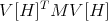 a
”vector” with the Hj entering linearly and M a matrix. Other commands are described here but
they are subservient to NCConvexityRegion[afunction,alist,options] and would not be used
independently of it. The commands in this chapter are not listed alphabetically but are listed in
the presumed order of importance.
4.8.1 NCConvexityRegion[afunction,alistOfVars,opts]
-
- Aliases: None.
-
- Description: NCConvexityRegion[afunction,alistOfVars,opts] computes the ”region” on
which afunction is matrix convex with respect to alistOfVars. It performs three main
operations. First it computes the Hessian with respect to alistOfVars (see NCHessian).
Then, using NCMatrixOfQuadratic, the Hessian is factored into the form vtMv.
Finally, depending on the option AllPermutation, either NCAllPermutationLDU
or NCLDUDecomposition is called to compute the LDU factorization of M, the
default being AllPermutation → NCLDUDecomposition. If D ends up being diagonal,
then a list of the diagonal elements of D is returned. If D ends up being
block diagonal with 2 × 2 blocks, then a message is printed out and the list:
{{diagonalentries},{subdiagonalentries},{-subdiagonalentries}} is returned. The
region of convexity of afunction with respect to alistOfVars equals the closure, in
a certain sense, of the set of matrices which makes all diagonal entries positive.
If there are non-zero subdiagonal entries, then afunction is typically not matrix
convex on any open set. Options permit the user to select a range of different
permutation matrices, thereby producing several possibly distinct diagonal matrices
D.
EXAMPLE: NCConvexityRegion[x **y + y **x,{x,y}] gives:
L**D**tp[L] gave non-trivial blocks, so the output list is:
{{diagonal},{subdiagonal},{-subdiagonal}}
{{{0, 0},{2},{-2}}}
While, NCConvexityRegion[x **y + y **x,{x,y},AllPermutation → True] gives:
Middle matrix is size 2 X 2
At most 2 permutations possible.
{1}
L**D**tp[L] gave non-trivial blocks, so the output list is:
{{diagonal},{subdiagonal},{-subdiagonal}}
{{{0, 0},{2},{-2}}}
In both cases, NCHessian[x **y + y **x,{x,h},{y,k}] gives
2h **k + 2k **h,
NCMatrixOfQuadratic[2h **k + 2k **h,{h,k}] gives
{{{h,k}},{{0, 2},{2, 0}},{{h},{k}}},
and depending on if AllPermutation is set to True or False you have that either
NCLDUDecomposition[{{0, 2},{2, 0}}] gives
{{{1, 0},{0, 1}},{{0, 2},{2, 0}},{{1, 0},{0, 1}},{{1, 0},{0, 1}}}
or NCAllPermutationLDU[{{0, 2},{2, 0}}] gives
{{{{1, 0},{0, 1}},{{0, 2},{2, 0}},{{1, 0},{0, 1}},{{1, 0},{0, 1}}},
{{{1, 0},{0, 1}},{{0, 2},{2, 0}},{{1, 0},{0, 1}},{{1, 0},{0, 1}}}}
-
- Arguments: afunction is a function whose variables are listed in alistOfV ars, where
alistOfV ars should be of the form {x1,x2,…,xn}.
The default options for NCConvexityRegion are:
NCSimplifyDiagonal →False
DiagonalSelection → False
ReturnPermutation → False
ReturnBorderVector → False
AllPermutation → False
NCSimplifyDiagonal is an option geared toward a similar option used in
NCLDUDecomposition. This will make sure that the pivots (or diagonal entries) are
all first simplified with NCSimplifyRational before they are used to check that the
pivots are all nonzero. Simplifying the pivots using NCSimplifyRational can be quite
time consuming, so by default we commute everything and then use Mathematica
simplification commmands. We do this only to convince ourselves that the pivot is
nonzero. If all the pivots are zero using CommuteEverything we then revert to using
NCSimplifyRational to verify our suspicions. Setting NCSimplifyDiagonal → True
will bypass the commute everything step. (Note: Either way, the unsimplified form of
the pivot is returned unless it is equal to zero.)
The option AllPermutation tells NCConvexityRegion which of
NCLDUDecomposition or NCAllPermutationLDU to use. Setting AllPermutation to
True will use
NCAllPermutationLDU,while False uses NCLDUDecomposition. The default value is
AllPermutation → False. The following pertains to the case where AllPermutation
is set to True. If you decide to do this, then you should also set DiagonalSelection
to the permutations you would like NCAllPermutationLDU to use. Since different
permutations return different diagonals, some diagonals are simpler to work with than
others. On the other hand, if AllPermutation is set to False, which it defaults to,
then NCConvexityRegion calls NCLDUDecomposition and what follows does not apply
as no permutations are used. Different permutations return different diagonals. Some
diagonals are simpler to work with than others. Because of this, we allow the user to
select a sampling of different permutations. The total number of permutations will not
be known until M is computed. After M is computed, the total number of possible
permutations will be printed on the screen. DiagonalSelection → {n} returns the
diagonals resulting from the first n permutations. DiagonalSelection→{k,n} returns
the diagonals resulting from the kth through nth permutations. Since the total number
of permutations is assumed to be unknown by the user, if n is too high, then n is
replaced by the total number of permutations. Also, not all of the permutations are
permissible. Because of this, NCLDUDecomposition automatically pivots if an invalid
permutation is used for a particular step. This means it is possible that not all the
diagonals returned result from different permutations. For this reason there is the
option ReturnPermutation which if entered as True returns the permutations used
for each resulting factorization. Finally, the user may wish to analyze the border
vectors and may do so by setting ReturnBorderVector to True. This will cause
NCConvexityRegion to return the border vectors v from the vtMv factorization of the
hessian. Now vt will have the form
 So what will actually be returned is a list of the form
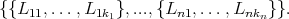 This vector will be formed using a call to NCBorderVectorGather. Also, a call will be
made to NCIndependenceCheck to determine, if possible, whether or not the elements
of the above list are independent. The results of this check will be printed to the screen.
So what will actually be returned is a list of the form
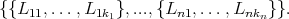 This vector will be formed using a call to NCBorderVectorGather. Also, a call will be
made to NCIndependenceCheck to determine, if possible, whether or not the elements
of the above list are independent. The results of this check will be printed to the screen.
-
- Comments / Limitations: None.
4.8.2 NCMatrixOfQuadratic[ , {H1,…,Hn} ]
-
- Aliases: None.
-
- Description: NCMatrixOfQuadratic[ , {H1,H2,…,Hn} ] gives
a vector matrix factorization of a symmetric quadratic function in noncommutative
variables
 = {H1,H2,…,Hn} and their transposes.
= {H1,H2,…,Hn} and their transposes.
NCMatrixOfQuadratic[ , {H1,H2,…,Hn} ], generates the list {left border
vector, coefficient matrix, right border vector}. That is, Q is factored into
the vector-matrix-vector product V [ ]T M
Q V[
]T M
Q V[ ].ThevectorV[
].ThevectorV[ ]islinearin
]islinearin andiscalledabordervectorofthequadraticfunctionQ.ThematrixM˙QiscalledthecoefficientmatrixofthequadraticfunctionQ.Arguments :EachtermofQisassumedtobeaquadraticexpressionintermsofthevariablesH˙1,H˙2,. . . ,H˙nandtheirtransposes(Qishomogeneous).
Forexample,supposethatQ=3 tp[x]**y+3 tp[y]**xandthat
andiscalledabordervectorofthequadraticfunctionQ.ThematrixM˙QiscalledthecoefficientmatrixofthequadraticfunctionQ.Arguments :EachtermofQisassumedtobeaquadraticexpressionintermsofthevariablesH˙1,H˙2,. . . ,H˙nandtheirtransposes(Qishomogeneous).
Forexample,supposethatQ=3 tp[x]**y+3 tp[y]**xandthat
 = {x,y}.Then,NCMatrixOfQuadratic[Q,
= {x,y}.Then,NCMatrixOfQuadratic[Q, ]gives{{{tp[x],tp[y]}},{{0, 3},{3, 0}},{{x},{y}}}.InMatrixForm,thislookslike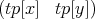*
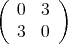*
]gives{{{tp[x],tp[y]}},{{0, 3},{3, 0}},{{x},{y}}}.InMatrixForm,thislookslike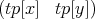*
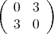* .
Ingeneral,supposeQisaquadraticfunctionoftwovariables,
.
Ingeneral,supposeQisaquadraticfunctionoftwovariables, = {H,K},withalltransposeelementsHˆT, KˆToccuringbeforeallnon-
transposeelements.ThenNCMatrixOfQuadraticwillreturntheleftbordervectorV[
= {H,K},withalltransposeelementsHˆT, KˆToccuringbeforeallnon-
transposeelements.ThenNCMatrixOfQuadraticwillreturntheleftbordervectorV[ ]ˆT,thematrixM˙Q,andtherightvectorV[
]ˆT,thematrixM˙Q,andtherightvectorV[ ]where
M
Q :=
]where
M
Q :=
 and V [ ⃗H] := (
| |
| |
| |
| |
( HL1
1
HL1
2
⋅⋅⋅
HL1
ℓ1
KL2
1
⋅⋅⋅
KL2
ℓ2 )
| |
| |
| |
| |
)
forsomeL˙iˆj , i=1,. . . ,ℓj. The Lj
i , i = 1,...,ℓj are called the coefficients of the border
vector. The L1
i corresponding to H are distinct and only one may be the identity matrix
(equivalently for the L2
i corresponding to K). The border vector V is the vector composed
of H, K and Lj
i. The matrix M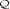 is the matrix with Ai,j entries.
Noncommutative quadratics which are not hereditary have a similar representation (which
takes more space to write) for such a quadratic in H,K. For example, the border vector for
a quadratic in H, HT , K, KT has the form
V [H,K] = [
V1 V2 ]
where we have
V1 = (
(L1
1)T HT ,⋅⋅⋅ ,(L1
ℓ1)T HT ,(L2
1)T KT ,⋅⋅⋅ ,L(2
ℓ2)T KT )
and
V2 = (~
L1
1H,⋅⋅⋅ , ~ L1
ℓ1H, ~ L2
1K,⋅⋅⋅ , ~ L2
ℓ2K)
.
We should emphasize that the size of the M representation of a noncommutative quadratic
functions [H1,...,Hk] depends on the particular quadratic and not only on the number of
arguments of the quadratic. There are noncommutative quadratic functions in one variable
which have a representation with M a 102 × 102 matrix.
The basic idea of NCMatrixOfQuadratic is that it searches for terms of form
Left **X **Middle **Y **Right
where X = Hi or HT
i and Y = Hj or HT
j for 1 ≤ (i,j) ≤ n. Terms of the form Left**X and
Y **Right are used to form the left and right vectors. Each time the search finds a unique
Right (Left) term causes the length of the right (left) border vector to be increased by one.
The term Middle becomes the entries in the matrix M.
Comments / Limitations: NCMatrixOfQuadratic will try to symmetrize the resulting matrix M.
If NCMatrixOfQuadratic is unable to do this, an error message will be printed and {
leftvector, matrix, rightvector } will be returned, where matrix is not symmetric
and leftvector is not necessarily the transpose of rightvector. The vector-matrix-vector
product should still be equal to the orginal quadratic expression.
and V [ ⃗H] := (
| |
| |
| |
| |
( HL1
1
HL1
2
⋅⋅⋅
HL1
ℓ1
KL2
1
⋅⋅⋅
KL2
ℓ2 )
| |
| |
| |
| |
)
forsomeL˙iˆj , i=1,. . . ,ℓj. The Lj
i , i = 1,...,ℓj are called the coefficients of the border
vector. The L1
i corresponding to H are distinct and only one may be the identity matrix
(equivalently for the L2
i corresponding to K). The border vector V is the vector composed
of H, K and Lj
i. The matrix M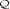 is the matrix with Ai,j entries.
Noncommutative quadratics which are not hereditary have a similar representation (which
takes more space to write) for such a quadratic in H,K. For example, the border vector for
a quadratic in H, HT , K, KT has the form
V [H,K] = [
V1 V2 ]
where we have
V1 = (
(L1
1)T HT ,⋅⋅⋅ ,(L1
ℓ1)T HT ,(L2
1)T KT ,⋅⋅⋅ ,L(2
ℓ2)T KT )
and
V2 = (~
L1
1H,⋅⋅⋅ , ~ L1
ℓ1H, ~ L2
1K,⋅⋅⋅ , ~ L2
ℓ2K)
.
We should emphasize that the size of the M representation of a noncommutative quadratic
functions [H1,...,Hk] depends on the particular quadratic and not only on the number of
arguments of the quadratic. There are noncommutative quadratic functions in one variable
which have a representation with M a 102 × 102 matrix.
The basic idea of NCMatrixOfQuadratic is that it searches for terms of form
Left **X **Middle **Y **Right
where X = Hi or HT
i and Y = Hj or HT
j for 1 ≤ (i,j) ≤ n. Terms of the form Left**X and
Y **Right are used to form the left and right vectors. Each time the search finds a unique
Right (Left) term causes the length of the right (left) border vector to be increased by one.
The term Middle becomes the entries in the matrix M.
Comments / Limitations: NCMatrixOfQuadratic will try to symmetrize the resulting matrix M.
If NCMatrixOfQuadratic is unable to do this, an error message will be printed and {
leftvector, matrix, rightvector } will be returned, where matrix is not symmetric
and leftvector is not necessarily the transpose of rightvector. The vector-matrix-vector
product should still be equal to the orginal quadratic expression.
4.8.3 NCIndependenceCheck[aListofLists,variable]
-
- Aliases: None.
-
- Description: NCIndependenceCheck[aListofLists,variable] is aimed at verifying
whether or not a given set of polynomials are independent or not. It analyzes each list
of polynomials in aListofLists separately. There are three possible types of outputs for
each list in aListofLists. Two of them correspond to NCIndependenceCheck successfully
determining whether or not the list of polynomials is independent. The third type
of output corresponds to an unsuccessful attempt at determining dependence or
independence. If a particular list is determined to be independent, True will be
returned. If a list is determined to be dependent, a list beginning with False containing
a set of coefficients which demonstrate independence will be returned. Finally, if
NCIndependenceCheck cannot determine dependence or independence, it returns a list
beginning with Undetermined containing other information which is illustrated below
and described further in Comments/Limitations.
-
- Arguments: aListofLists is a list containing a list of the polynomials which are suspected of being
dependent. The argument variable will be subscripted and used to return the coefficient
dependencies for each list. Below is an example of a list of four lists. The first two are
dependent, the third is independent, and the fourth is undetermined.
Suppose you have four lists: Then NCIndependenceCheck[List1,List2,List3,List4,λ] returns
{NewList1,NewList2,NewList3,NewList4} where: In particular, what the above says is that List1.Newlist1[[2]] = 0,
and List2.Newlist2[[2]] = 0 (where “.” refers to the vector dot product). Therefore,
the set of polynomials in List1 and List2 are dependent. List3 is independent. Note
that List4 is clearly indpendent in the noncommutating case, and dependent in the
commuting case. When such phenomena occur, NCIndependenceCheck is unable to
determine whether or not the list of polynomials is independent. However, it does
return to the user, a set of dependencies for the λi’s which must hold in order for the
polynomials to sum to zero.
-
- Comments / Limitations: IndependenceCheck first uses the CommuteEverything command
to make the problem feasible. Therefore it is possible that polynomials are dependent
if variables commute, and independent if not. So in this case, or when the the
expression does not collapse to zero when using the commuting coefficients with the non
commuting polynomials, then the list {Undertermined,expression,list} is returned.
The list element expression is the sum of the polynomials with their corresponding λ’s.
And finally, list yields a list of the dependencies for the coefficents.
4.8.4 NCBorderVectorGather[alist,varlist]
-
- Aliases: None.
-
- Description: NCBorderVectorGather[alist,varlist] can be used to gather the
polynomial coefficents preceeding the elements given in varlist whenever they occur
in alist. That is to say, alist is a vector with variable entries. Each entry should end
with some term from varlist (or the transpose of some term from varlist). Then for
each element of varlist the coefficients that appear in front of that element in alist are
gathered together and placed inside a list. The list returned will be a list of lists, each
entry a list of the coefficients corresponding to the respective entries in varlist and their
transposes if they occur.
-
- Arguments: The first argument alist is a list of polynomials, all of which end in terms
from elements of the second argument, varlist, or in their transpose. alist need not be
ordered in a particular way with respect to varlist. The preceeding is best explained in
the following example.
Suppose List =
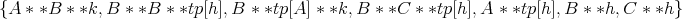 Then NCBorderVectorGather[List,{k,h}] returns the following list
![{{A * *B, B * *tp[A]},{B, C}, {B * *B, B * *C, A}}](NCBIGDOC49x.png) Note that the vectors are gather in the pattern k,tp[k],h,tp[h]. This pattern will be
the same despite the length of avarlist.
Note that the vectors are gather in the pattern k,tp[k],h,tp[h]. This pattern will be
the same despite the length of avarlist.
-
- Comments / Limitations: None.
4.9 NCGuts
This section details the command NCGuts, which expands the meaning of “**”, tp[], and
inv[].
4.9.1 NCStrongProduct1
-
- Aliases: None.
-
- Description: NCStrongProduct1 is an option of NCGuts. When True, ** serves to multiply
matrices as well as maintaining its original function with noncommutative entries. This
replaces the command MatMult. For example,
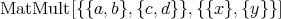 is the same as
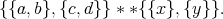 In addition, tp and tpMat are the same. NCStrongProduct1 → False is the default.
-
- Arguments: None.
-
- Comments / Limitations: None.
4.9.2 NCStrongProduct2
-
- Aliases: None.
-
- Description: NCStrongProduct2 is an option of NCGuts. When set to true,
if m is a matrix with noncommutative entries, inv[m] returns a formula
expression for the inverse of m. The considerable limitations of NCInverse
are still limitations in inv[m]. NCStrongProduct2 forces NCStrongProduct1. In
other words, NCGuts[NCStrongProduct2-¿True] makes ”**” multiply matrices
with noncommutative entries, just as NCGuts[NCStrongProduct1-¿True] does.
NCStrongProduct2 → False is the default.
-
- Arguments: None.
-
- Comments / Limitations: None.
4.9.3 NCSetNC
-
- Aliases: None.
-
- Description: NCSetNC is an option of NCGuts. When set to false, all letters are
automatically noncommutative unless SetCommutative makes them commutative.
NCSetNC → False is the default.
-
- Arguments: None.
-
- Comments / Limitations: None.
4.10 Setting Properties of an element in an algebra
4.10.1 SetInv[a, b, c, …]
-
- Aliases: None
-
- Description: SetInv[a,b,c,…] sets all the symbols a, b, c, … to be invertible (i.e. invQ[a],
invQ[b], invQ[c], … are set True).
-
- Arguments: Symbols separated by commands
-
- Comments / Limitations: If one does not set x to be invertible before the first use of invL[x]
or invR[x], then NCAlgebra may not make the substitution from invL[x] **x to 1 or
from x **invR[x] to 1 automatically.
4.10.2 SetSelfAdjoint[Symbols]
-
- Aliases: None
-
- Description: SetSelfAdjoint[a, b, …] will set a, b, … to be self-adjoint. The rules tp[a] := a,
tp[b] :=b, … and aj[a] := a, aj[b] := b, … will be automatically applied. See SelfAdjointQ.
-
- Arguments: Symbols is one or more symbols separated by commas.
-
- Comments / Limitations: If one does not set x to be self adjoint before the first use of
aj[x], then NCAlgebra may not make the substitution from aj[x] to x automatically.
Similary for tp.
4.10.3 SelfAdjointQ[aSymbol]
-
- Aliases: None
-
- Description: SelfAdjointQ[x] will return True if SetSelfAdjoint[x] was executed
previously. See SetSelfAdjoint.
-
- Arguments: aSymbol is a symbol
-
- Comments / Limitations: None
4.10.4 SetIsometry[Symbols]
-
- Aliases: None
-
- Description: SetIsometry[a,b,…] will set a, b, … to be isometries. If set the rules tp[a] ** a
:= Id, tp[b] ** b :=Id, … and aj[a] ** a := Id; aj[b] ** b := Id; … will be automatically
applied. See IsometryQ.
-
- Arguments: Symbols is one or more symbols separated by commas.
-
- Comments / Limitations: If one does not set x to be an isometry before the first use of aj[x],
then NCAlgebra may not make the substitution from aj[x] **x to 1 automatically.
Similarly for tp.
4.10.5 IsometryQ[aSymbol]
-
- Aliases: None
-
- Description: IsometryQ[x] will return True if SetIsometry[x] was executed previously. See
SetIsometry.
-
- Arguments: aSymbol is a symbol.
-
- Comments / Limitations: None
4.10.6 SetCoIsometry[Symbols]
-
- Aliases: None
-
- Description: SetCoIsometry[a,b,…] will set a, b, … to be co-isometries. The rules a ** tp[a]
:= Id, b ** tp[b] :=Id, … and a ** aj[a] := Id, b ** aj[b] := Id, … will be automatically
applied. See CoIsometryQ.
-
- Arguments: Symbols is one or more symbols separated by commas.
-
- Comments / Limitations: If one does not set x to be a coisometry before the first use of aj[x],
then NCAlgebra may not make the substitution from x **aj[x] to 1 automatically.
4.10.7 CoIsometryQ[aSymbol]
-
- Aliases: None
-
- Description: CoIsometryQ[x] will return True if SetCoIsometry[x] was executed
previously. See SetCoIsometry.
-
- Arguments: aSymbol is a symbol.
-
- Comments / Limitations: None
4.10.8 SetUnitary[Symbols]
-
- Aliases: None
-
- Description: SetUnitary[a,b,…] will set a, b, … to be isometries and co-isometries. Also
effects on UnitaryQ. See SetIsometry and SetCoIsometry.
-
- Arguments: Symbols is one or more symbols separated by commas.
-
- Comments / Limitations: If one does not set x to be a unitary before the first use of aj[x],
then NCAlgebra may not make the substitution from x**aj[x] to 1 or from aj[x] **x
to 1 automatically.
4.10.9 UnitaryQ[aSymbol]
-
- Aliases: None
-
- Description: UnitaryQ[x] will return True if SetUnitary[x] was executed previously.
Caution: If one executes SetIsometry[x]; SetCoIsometry[x]; then x is unitary, but
UnitaryQ remains uneffected. See SetUnitary.
-
- Arguments: aSymbol is a symbol.
-
- Comments / Limitations: None
4.10.10 SetProjection[Symbols]
-
- Aliases: None
-
- Description: SetProjection[a,b,…] will set a, b, … to be projections. The rules a ** a
:= a, b ** b :=b, … will be automatically applied. Caution: If one wants x to be a
self-adjoint projection, then one must execute SetSelfAdjoint[x]; SetProjection[x].
See ProjectionQ.
-
- Arguments: Symbols is one or more symbols separated by commas.
-
- Comments / Limitations: If one does not set x to be a projection before the first use of x,
then NCAlgebra may not make the substitution from x **x to x.
4.10.11 ProjectionQ[S]
-
- Aliases: None
-
- Description: ProjectionQ[x] will return true if SetProjection[x] was executed previously.
See SetProjection.
-
- Arguments: S is a symbol.
-
- Comments / Limitations: None
4.10.12 SetSignature[Symbols]
-
- Aliases: None
-
- Description: When SetSignature[a] and SetSelfAdjoint[a] are executed, the rule a ** a
:= -1 will be automatically applied. See SetSelfAdjoint and SignatureQ.
-
- Arguments: Symbols is one or more symbols separated by commas.
-
- Comments / Limitations: If one does not set x to be a signature matrix and self adjoing
before the first use of x, then NCAlgebra may not make the substitution from x **x
to -1.
4.10.13 SignatureQ[Symbol]
-
- Aliases: None
-
- Description: SignatureQ[x] will return True if SetSignature[x] was executed previously.
See SetSignature.
-
- Arguments: Symbol is a symbol.
-
- Comments / Limitations: None
4.11 Setting Properties of functions on an algebra
4.11.1 SetSesquilinear[Functions]
-
- Aliases: SetSesq
-
- Description: SetSesquilinear[a,b,c,…] sets a, b, c, … to be functions of two variables
which are linear in the first variable and conjugate linear in the second variable. See
SetBilinear.
-
- Arguments: Functions is one or more symbols separated by commas.
-
- Comments / Limitations: None
4.11.2 SesquilinearQ[aFunction]
-
- Aliases: None
-
- Description: SesquilinearQ[x] will return True if SetSesquilinear[x] was executed
previously. See SetSesquilinear.
-
- Arguments: aFunction is a symbol.
-
- Comments / Limitations: None
4.11.3 SetBilinear[Functions]
-
- Aliases: None
-
- Description: SetBilinear[a,b,c,…] sets a, b, c, … to be functions of two variables which is
linear in the first variable and linear in the second variable. See SetSesquilinear.
-
- Arguments: Functions is one or more symbols separated by commas.
-
- Comments / Limitations: None
4.11.4 BilinearQ[aFunction]
-
- Aliases: None
-
- Description: BilinearQ[x] will return True if SetBilinear[x] was executed previously. See
SetBilinear.
-
- Arguments: aFunction is a symbol.
-
- Comments / Limitations: None
4.11.5 SetLinear[Functions]
-
- Aliases: None
-
- Description: SetLinear[b,c,d,…] sets b, c, d, … to be functions of one variable which are
linear. See LinearQ.
-
- Arguments: Functions is one or more symbols separated by commas.
-
- Comments / Limitations: None
4.11.6 LinearQ[aFunction]
-
- Aliases: None
-
- Description: LinearQ[x] will return True if SetLinear[x] was executed previously. See
SetLinear.
-
- Arguments: aFunction is a symbol.
-
- Comments / Limitations: None
4.11.7 SetConjugateLinear[Functions]
-
- Aliases: None
-
- Description: SetConjugateLinear[b,c,d,…] sets b, c, d, … to be functions of one variable
which are conjugate linear. See ConjugateLinearQ.
-
- Arguments: Functions is one or more symbols separated by commas.
-
- Comments / Limitations: None
4.11.8 ConjugateLinearQ[aFunction]
-
- Aliases: None
-
- Description: ConjugateLinearQ[x] will return True if SetConjugateLinear[x] was
executed previously. See SetConjugateLinear.
-
- Arguments: aFunction is a symbol.
-
- Comments / Limitations: None
4.11.9 SetIdempotent[Functions]
-
- Aliases: None
-
- Description: SetIdempotent[b,c,d,…] sets b, c, d, … to be functions of one variable such that,
for example, b[b[z_]] := z; Common examples are inverse, transpose and adjoint. See
IdempotentQ.
-
- Arguments: Functions is one or more symbols separated by commas.
-
- Comments / Limitations: None
4.11.10 IdempotentQ[aFunction]
-
- Aliases: None
-
- Description: IdempotentQ[x] will return True if SetIdempotent[x] was executed previously
and False otherwise. See SetIdempotent.
-
- Arguments: aFunction is a symbol.
-
- Comments / Limitations: None
4.11.11 SetCommutingFunctions[ aFunction, anotherFunction]
-
- Aliases: None
-
- Description: SetCommutingFunctions takes exactly two parameters.
SetCommutingFunctions[b, c] will implement the definitions b[c[z___]] := c[b[z]] /;
Not[LeftQ[b,c]]; and c[b[z___]] := b[c[z]] /; LeftQ[b, c]; Common examples are the
adjoint commuting with the transpose. Note: The above implementation will NOT lead
to infinite loops. WARNING: If one says SetCommutingFunctions[b, c] and then sets
only LeftQ[c,b], then neither of the above rules will be executed. Therefore, one must
remember the order of the two parameters in the statement. One obvious helpful habit
would be to use alphabetical order (i.e. say SetCommutingFunctions[aj, tp] and not
the reverse). See CommutatingOperators and LeftQ.
-
- Arguments: aFunction and anotherFunction are symbols.
-
- Comments / Limitations: None
4.11.12 SetNonCommutativeMultiplyAntihomomorphism[ Functions]
-
- Aliases: None
-
- Description: SetNonCommutativeMultiplyAntihomomorphism[b,c,d,…] sets b, c, d, ... to
be functions of one variable such that, for example, b[anything1**anything2] becomes
b[anything2] **b[anything1] if ExpandQ[b] is True; b[anything2] ** b[anything1]
becomes b[anything1 ** anything2] if ExpandQ[b] is False; Common examples are
inverse, transpose and adjoint. NOTE: The synonym NCAntihomo is easier to type.
-
- Arguments: Functions is one or more symbols separated by commas.
-
- Comments / Limitations: None
4.12 Manipulating an Expression — less useful commands
4.12.1 NCTermArray[expr,aList,anArray]
-
- Aliases: None
-
- Description: NCTermArray[expr,aList,anArray] creates an array
anArray whose contents represent the terms of expr sorted by degree. The variables
anArray[”variables”], anArray[”types”] and elements such as anArray[x**x,y] and
anArray[x **x **x,y **y] to hold the terms with 2 x‘s and 1 y and 3 x’s and 2 y’s,
respectively (assuming that aList = {x,y}). You can reconstruct expr from anArray
via ReconstuctTaylor[anArray].
-
- Arguments: expr is an algebraic expression, aList is a list of variables and anArray is a
symbol.
-
- Comments / Limitations: Not available before NCAlgebra 1.0
The following is an example of the above command.
In[22]:= expr = x ** z ** x ** w + x ** z ** y ** w + z ** x ** x ** w +
z ** x ** y ** w;
In[23]:= NCTermArray[expr,{x,y},foo]
Out[23]= foo
In[24]:= ??foo
Global‘foo
foo["types"] = {{1, 1}, {2, 0}}
foo["variables"] := {x, y}
foo[x, y] = x ** z ** y ** w + z ** x ** y ** w
foo[x ** x, 1] = x ** z ** x ** w + z ** x ** x ** w
foo[x___] := 0
|
4.12.2 NCReconstructFromTermArray[anArray]
-
- Aliases: None
-
- Description: NCTermArray[expr,aList,anArray];
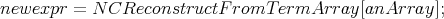 sets newexpr equal to expr.
-
- Arguments: anArray is a symbol previously filled by NCTermArray
-
- Comments / Limitations: Not available before NCAlgebra 1.0
If we continue with the example above we have the following
In[24]:= NCReconstructFromTermArray[foo]
Out[24]= x ** z ** x ** w + x ** z ** y ** w + z ** x ** x ** w +
> z ** x ** y ** w
|
However, now one can also do some manipulation before reconstructing as shown
below.
In[25]:= foo[x,y] = NCC[foo[x,y],y**w]
Out[25]= (x ** z + z ** x) ** y ** w
In[26]:= foo[x**x,1] = NCC[foo[x**x,1],x**w]
Out[26]= (x ** z + z ** x) ** x ** w
In[27]:= ??foo
Global‘foo
foo["types"] = {{1, 1}, {2, 0}}
foo["variables"] := {x, y}
foo[x, y] = NCC[x ** z ** y ** w + z ** x ** y ** w, y ** w]
foo[x ** x, 1] = NCC[x ** z ** x ** w + z ** x ** x ** w, x ** w]
foo[x___] := 0
In[27]:= NCReconstructFromTermArray[foo]
Out[27]= (x ** z + z ** x) ** x ** w + (x ** z + z ** x) ** y ** w
|
4.12.3 NCCompose[aVerySpecialList]
-
- Aliases: NCCom
-
- Description: NCCompose[NCDecompose[poly,a]] will reproduce poly. For example,
NCCompose[NCDecompose[poly,a,b], 1, 0] will reconstruct the elements of poly
which are of order 1 in a and of order 0 in b.
-
- Arguments:
-
- Comments / Limitations: Called within NCCollect. The average user would never use
this.
4.12.4 NCDecompose[expr, listofsymbols]
-
- Aliases: NCDec
-
- Description: NCDecompose[poly, a] or NCDecompose[poly, a, b, c, ...] will produce a list of
elements of poly in which elements of the same order of a (or the same order of a, b,
c, ... ) are collected together.
-
- Arguments:
-
- Comments / Limitations: Called within NCCollect. The average user would never use
this.
4.13 Utilities
Most of these utilities are for saving things. They probably do not work nor will you wish to use
them in the Notebook environment.
4.13.1 SaveRules[expression, ’optional tag → ”message”’]
-
- Aliases: SaveR
-
- Description: Its main purpose is to control the Rules.temp file which records the rules used
any time a Substitute command is used.
-
- Arguments: SaveRules[On] turns on the Rules.temp for continuous recording of rules.
SaveRules[Off] turns off the continuous record feature of Substitute commands, but
any Substitute command can make a record in Rules.temp by using On as its optional
argument. SaveRules[expression] will save the evaluated form of expression to the
Rules.temp. SaveRules[expression,tag → ”message”] will save the evaluated form of
’expression’ to the Rules.temp file with a explanatory message.
-
- Comments / Limitations: SaveRules[”ccc”], where ccc is a string, can be used to include
comments into the Rules.temp file. SaveRules[mathematical expression] will record the
mathematical expression without its definitions.
4.13.2 SaveRulesQ[]
-
- Aliases: SaveRQ
-
- Description: SaveRulesQ[] indicates the status of the continuous recording feature of
the Substitute commands into the Rules.temp file by message and returns True if
continuous records are being made and False if continuous records are not being made.
-
- Arguments: None
-
- Comments / Limitations: Messages can be suppressed or enabled by typing Off[
SaveRulesQ::Off] and On[SaveRulesQ::On].
4.13.3 FunctionOnRules[Rules, Function1, Function2, (optional On)]
-
- Aliases: FORules
-
- Description: It maps Function1 onto the left hand side and Function2 onto the right
hand side of each rule in a set of rules, and returns the new set of rule. For example,
FunctionOnRules[ { a→ x, b→ y }, Sin, Cos] gives {Sin[a] → Cos[x], Sin[b] → Cos[y]
}
-
- Arguments: Rules is a single rule or list of rules. Function1 and Function2 are any built-in
Mathematica function, NCAlgebra function, pure function, or user-defined function.
-
- Comments / Limitations: None
4.14 Deprecated Commands
The following commands are no longer supported in this version of NCAlgebra.
4.14.1 RandomMatrix[m,n,min,max,options]
-
- Aliases: None.
-
- Description: RandomMatrix[ m, n, min, max, options ] returns a random matrix of
size m by n with entries between the values min and max.
-
- Arguments: m and n are the number of rows and columns of the matrix. min and max
are the minimum and maximum values of the entries in the matrix. The options are
MatrixType and EntryType. The option MatrixType has values Any, Diagonal, or
Symmetric. The default is MatrixType → Any which returns an ordinary unrestricted
matrix. MatrixType → Diagonal returns random diagonal matrices. MatrixType →
Symmetric returns random symmetric matrices. The option EntryType has values
Integer or Real. The default is EntryType → Real which produces real floating point
numbers as entries for the random matrix. EntryType → Integer produces integers
as entries.
-
- Comments / Limitations: Functionality provided by new RandomInteger, RandomDouble,
etc, native Mathematica commands
4.14.2 CEEP
-
- Aliases: None
-
- Description: The “CEEP” file tells Mathematica that you want to record the functions you
use during the session for later use or examination. It prompts you for a file name. Say
you respond MYSESSION. CEEP records your session – two different ways into two
different files – the first file (e.g. MYSESSION.m and MYSESSION.ex) records the In[]
and Out[] lines of code you see on the screen and the second file (which contains the
suffix .ex – MYSESSION.ex in the above example) saves just the commands which you
type.
Functions stored in these files can be brought into a Mathematica session at a later
time by typing ≪MYSESSION.ex and it executes. This file can also be modified in a
text editor external to the Mathematica program. The “NCAlgebra.m” file contains
the instructions to load NCAlgebra “packages” which allow the manipulation of
noncommutative expressions.
Also, when using UNIX via a UNIX shell (rather than a Mathematica notebook), UNIX
has a ’script’ utility which can be used. Type ’man script’ to find out more.
-
- Arguments: None
-
- Comments / Limitations: Fails inside a Notebook. You can essentially achieve the
same functionality by using file=OpenAppend[”filename”]; AppendTo[$Echo, file];
If TEXformating is desired use file=OpenAppend[”filename”, FormatType - >
NCTeXForm];